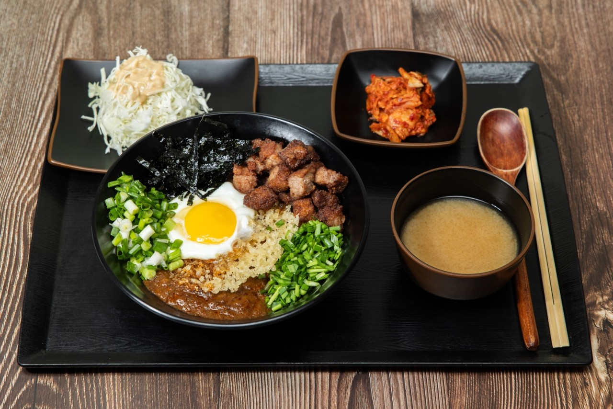
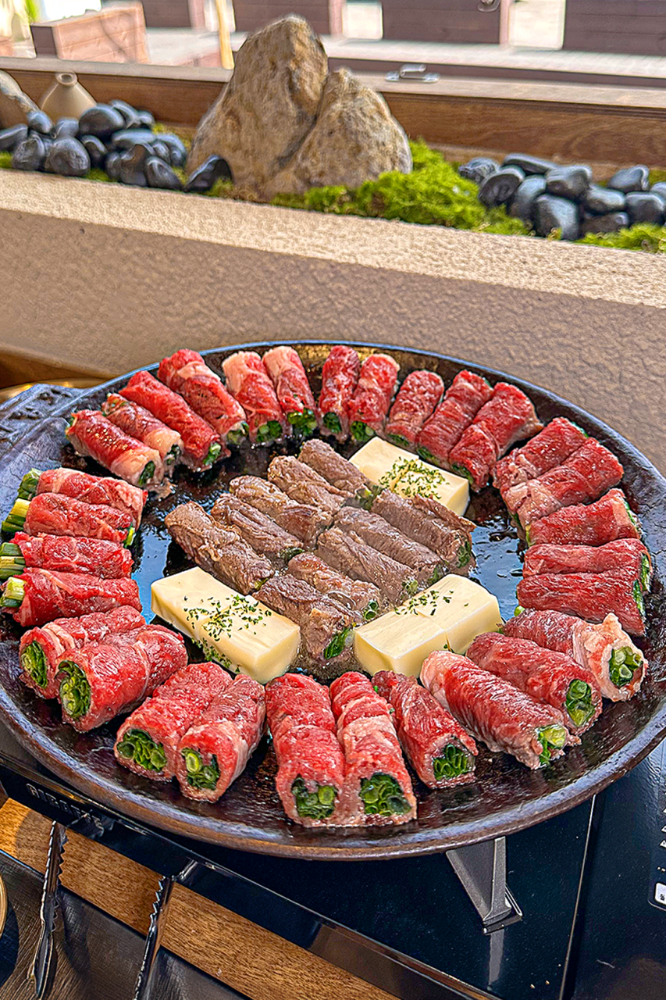
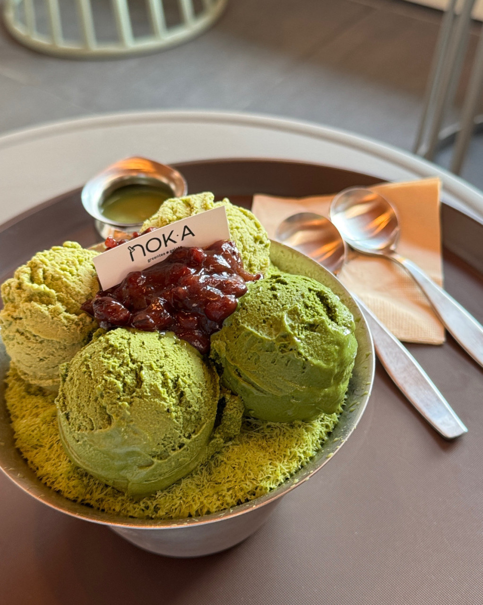
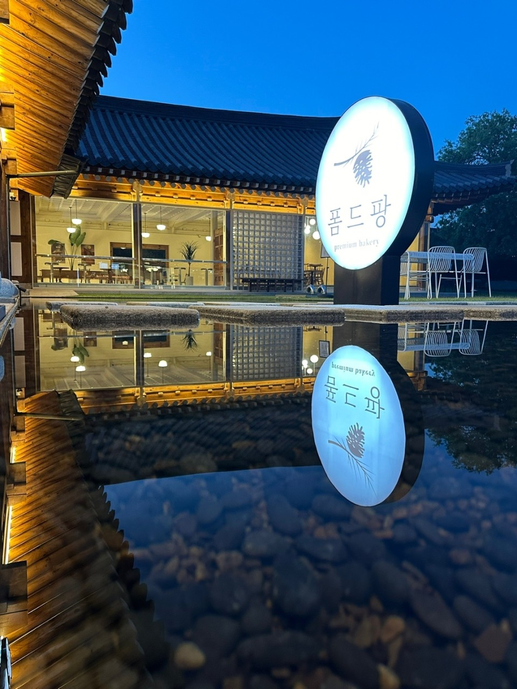
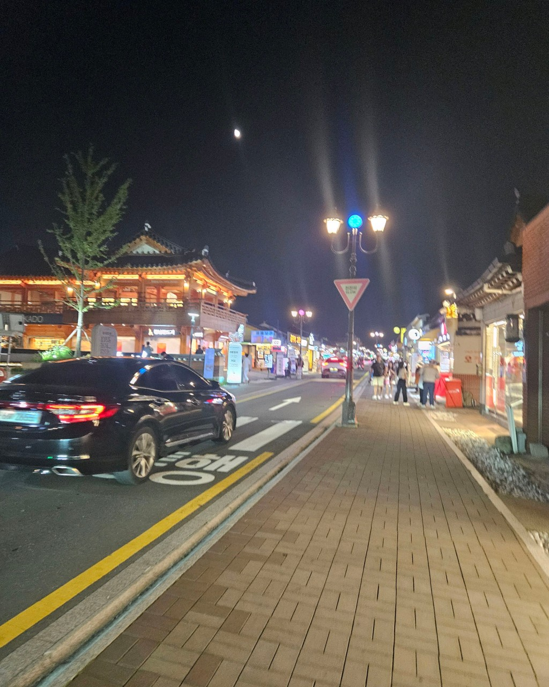
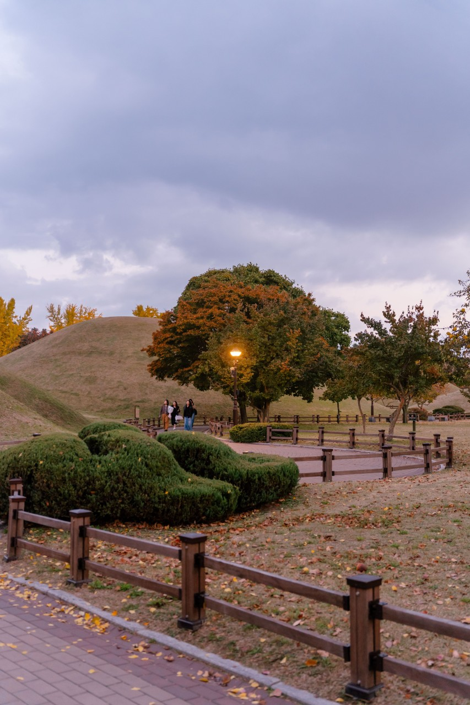

바니베어 뮤지엄
곰 인형이 많이있는 박물관? 정도로 생각하면 될꺼같아! 아무튼 가서 보면 예쁠꺼야

경주역에 도착하고 바로 여기로 갈꺼야 ! 소고기를 작은 불판 위에서 직접 구워서 먹는다네
사진에 나온 손말이고기가 대표 메뉴이고, 비빔면, 냉면 등이 파는 곳이야~
녹차 젤라또가 유명한 디저트 집이야! 규가츠정에서 가까운 곳에 있어
모습이 정말 예쁜 카페라 골라봤어
경주의 가장 유명한 길거리야 ! 유명한 가게들이 여기 많이 있어, 점심 먹고 바로 가보자
곰 인형이 많이있는 박물관? 정도로 생각하면 될꺼같아! 아무튼 가서 보면 예쁠꺼야
경주에 있는 정말 큰 무덤이자, 가장 큰 공원이야! 여기서는 볼 께 많이 있어
곰 인형 박물관 다음으로 갈 곳이야, 여기도 한국 전통 박물관 정도로 보면 될꺼 같아

마지막 일정으로 갈 곳이야, 경주에 왔으면 무조건 가봐야 되는 장소라고 생각해!